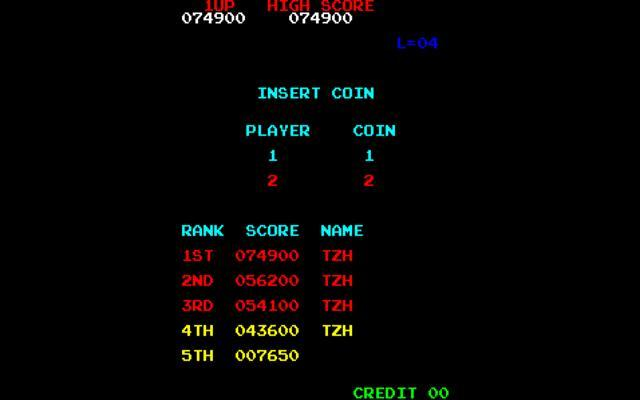
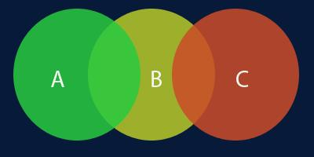
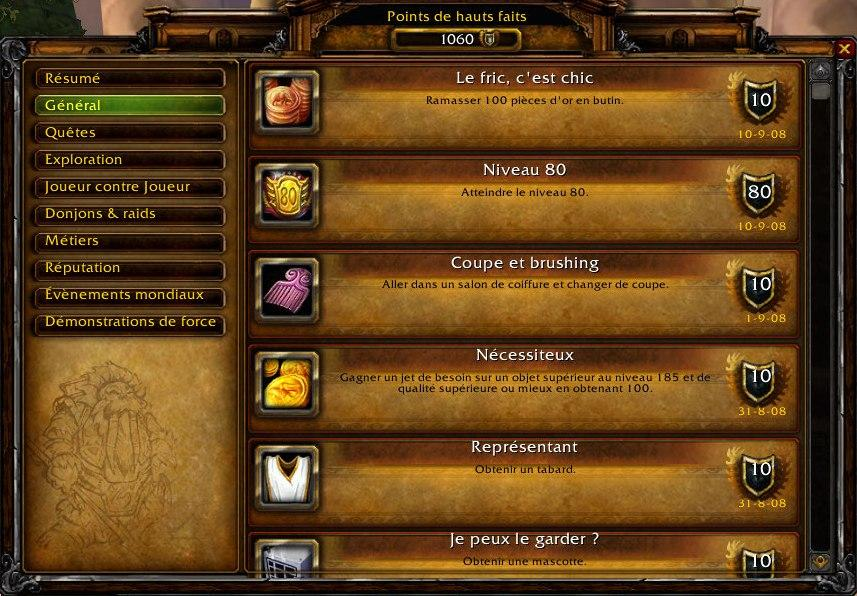

Les achievements : le su-sucre des geeks
I. Introduction
1. Achievement, késako ?
En voilà une bonne question: qu'est ce qu'un achievement ? Certains le savent peut-être déjà, d'autres en ont peut-être entendu parler sans le savoir et, enfin, d'autres n'en ont jamais entendu parler. On verra petit à petit de quoi il s'agit, mais pour que la suite de l'article soit compréhensible, il convient de donner une courte définition de l'achievement.
Il s'agit d'une distinction reçue par le joueur pour avoir accompli un certain fait. En français, on peut parler de hauts faits, d'exploits, de défis et plein d'autres petits noms doux. On les retrouve un peu partout en y regardant à deux fois ! Dans des MMO comme World of Warcraft ou même dans des jeux de shoot comme Call of Duty Modern Warfare 2, ils sont présents. Pour ceux qui n’auraient pas tout à fait compris, voila un exemple plus concret : on pourrait imaginer un achievement nommé « Au voleur ! » que le joueur obtient en volant une pomme dans chaque maison du village. C’est parfois aussi simple que cela.
2. Super… Et à quoi ça sert ?

Voilà une autre bonne question. Pour commencer, faisons un petit voyage en arrière dans le temps. Nous sommes en dans les années 70/80. C'est la Guerre Froide, les hippies dominent le monde et un peu partout, des salles d'arcades fleurissent. C'est super génial, il y a du pixel art à tous les coins de rues là-dedans. Mais le mieux, c'est pas seulement de jouer au jeux, c'est d'avoir son nom dans les highscores (scores élevés pour les anglophobes).
Sauf que les jeux se sont tellement perfectionnés et complexifiés avec le temps que la notion de score est devenue obsolète. En dehors de quelques jeux online ou d'applications sur iPod, ils ont quasiment disparus.
Alors, pour récompenser les joueurs les plus assidus, ceux qui veulent tout finir, on a mis en place les achievements. Ils remplacent les highscores et permettent de montrer que vous êtes le plus fort et que wouah ! Vous avez terrassé le dragon maléfique, le boss final, armé d'une cuillère en bois vermoulu.
3. Donc c'est un truc pour les drogués du jeu, les achievements ?
Et bien, non, pas forcément ! Car il existe de multiples façons de présenter les achievements et rien ne vous oblige à demander au joueur de survivre à l’Armageddon de fin du jeu en caleçon. De plus, il est souvent amusant pour un joueur de voir qu'il a relevé un défi proposé par les game designers. Les achievements peuvent également pousser le joueur à découvrir plus en profondeur le contenu du jeu, par exemple en lui proposant d'explorer un lieu difficile d'accès.
Obtenir un achievement est souvent un moment agréable pour le joueur, puisqu'il ressentira probablement une certaine satisfaction, et verra ses efforts récompensés. Il faut également imaginer l'éventualité ou le joueur joue avec des amis à un même jeu, cela leur permet de comparer ce qu’ils ont fait et de se lancer des défis. Il faut également penser immersion et roleplay.
II. Étoffer son jeu grâce aux achievements
1. J’aimerais mettre des achievements dans mon jeu, mais je ne sais pas lesquels…
Il y a trois sortes d'achievements dans ce bas monde, comme indiqué sur le schéma ci-dessous :
- les super achievements du game-designer malin (A)
- les achievements tordants du game-designer facétieux (B)
- les achievements tout pourris du game-designer lourdaud (C)
Les premiers sont une valeur sûre, les seconds sont à utiliser avec précaution et on abordera rapidement les derniers dans les bêtises à ne pas faire. En fait, pour faire simple, vous visez tout ce qui se trouve dans l’ensemble ) et vivez dans la hantise de C. Pour ceux qui se posent la question, Si c’est ni A, ni C mais en B, ça reste acceptable, ça fera peut être rire quelqu’un (je vous le souhaite en tout cas).

A. Les achievements du game-designer malin
Qu'est-ce qu'un bon achievement ? C'est un achievement qui met en avant les atouts du jeu, qui pousse le joueur à en découvrir tout le contenu, à tout essayer, qui l'immerge dans l'univers, bref, un achievement qui parachève le jeu et permet au joueur de s'éclater. Ils peuvent faire la différence entre un bon jeu et un excellent jeu. Vous l'aurez deviné, un bon achievement est un achievement d'exploration, de collecte, de roleplay.
Cependant, il faut que cela ne soit pas trop pesant. Un achievement d'exploration, un bon, ne consiste pas pour le joueur assoiffé de gloire d'arpenter chaque pixel de l'univers que vous avez créé, il faut plutôt qu'il amène le joueur à se rendre à certains endroit particulier que vous ne souhaiter pas qu'il rate, comme le sommet de la montagne magique, les ruines englouties au fond du lagon, ou encore ce magnifique lac soufré couleur émeraude au cœur du volcan ardent. C'est ce genre de détail que vous avez bichonné et que vous voulez qu'il voie, même si le passage n'y est pas obligatoire.
Il peut encore s'agir de collectionner les sept lames ultimes sur lequel votre infographiste aura travaillé jusqu'à mourir étouffé sous une montagne de croquis ou je ne sais quelle gemme qu'on obtient après une longue série de quêtes annexes. Oui, encouragez le joueur à faire les quêtes annexes, vous les avez créées pour ça, et en plus ça rallonge la durée de vie.
Enfin, encouragez-le à améliorer son (ses) personnage(s) autant que possible, que ce soit en atteignant le niveau 100 ou en ramassant les 128 cristaux de vie cachés un peu partout. S'il y a autant de niveaux ou de cristaux, c'est bien pour que le joueur puisse aller au bout. Et en plus, ceux-là sont passe-partout, à moins que votre jeux ne soit fait que d'un seul personnage impossible à améliorer combattant un seul et unique monstre… Et encore, on peut toujours en trouver.
B. les achievements du game-designer rigolo
Je préviens tout de suite, cette catégorie est à manier avec prudence et à utiliser avec parcimonie, à moins que votre jeu ne soit purement comique. Je rappelle qu’ils chevauchent les deux autres catégories d'achievements (voir schéma), donc peuvent être aussi bien tordants que lourds…
Ceux-ci peuvent viser à faire essayer toutes sortes d’action totalement débiles et (théoriquement) désopilantes. Par exemple, trouver les 28 façons stupides de se suicider à travers le jeu ou tuer la marmotte albinos mutante qui apparait une fois sur 20 au sommet de telle montagne (attention il vaut mieux éviter les évènement qui arrivent une fois tout les 23 ans et qui sont quasiment infaisables de surcroît). On retrouve donc également des achievement d’exploration extravagants, incongrus et inattendus. A titre d’exemple, si vous avez inventé un lieu en total décalage avec le reste de votre univers, poussez le joueur à aller le voir. On peut également avoir d’autres objectifs (pour le moins) surprenants, comme par exemple visiter les latrines publiques de chaque hameau traversé, pousser à se saouler un certains nombre de personnes, etc. De la même façon, vous pouvez proposer au joueur de collecter les cinq armes les plus nulles du jeu, ou bien un set d’armures en dentelle rose parfaitement ridicule. Les références à des jeux où films d’anthologies seront également toujours très bien perçues par ceux qui les comprendront. En clair, soyez imaginatifs et un peu fantaisistes.
C. Les achievements à éviter
Je ne m’étendrais pas sur le sujet. Il s’agit des achievements sans intérêt précis autre que de marquer une progression du joueur ou ce genre de chose… On peut compter les « Mourrez x fois », les « Jouez 10 heures », « Tuez tel boss que vous ne pouvez pas éviter de toute manière » et les « Atteignez le niveau y ». Pas de contresens ici : y est un nombre peu élevé, que vous passerez forcément. Par exemple, dans un jeu ou le niveau maximum est 100, il est peu intéressant de récompenser le joueur pour avoir atteint le niveau 5. Si votre jeu est travaillé, il restera de lui-même suffisamment longtemps pour passer ce niveau.
Cela permet au joueur de voir ce qu’il a accompli, mais en contrepartie, il sait quand la fin approche, sans surprise aucune…
De plus, les achievements ne sont pas des marqueurs de progression pour le joueur. En fait, de façon générale, les achievements ne doivent pas pleuvoir sur le joueur lorqu'il joue, dans la mesure ou les obtenir est annexe et requiert d'accomplir des taches spécifiques, donc logiquement le joueur ne devrait en obtenir que très occasionnellement lorsqu'il ne cherche pas à les accomplir. Gardez aussi à l'esprit que si la diversité de vos achievements et leur nombre peut être un plus pour votre jeu, la valeur de l'achievement tient à la spécialité de l'acte à accomplir. S'il y a trop achievements, la spécialité devient une norme, et les actions censées être mises en valeur sont banalisées… Tout est donc une question d'équilibre dans le nombre d'achievements.
2. Mais le vilain flemmard de joueur, il veut pas les obtenir mes achievements !
Haha, le méchant ! Il faut l’appâter le bougre. Il faut bien présenter les achievements, pour le décider à les obtenir.
A. Présenter ses achievements
Pour bien les présenter, il convient de leur donner un titre sympathique. Par exemple, si un achievement consiste à tuer cent trolls, « Tuer cent trolls » est un titre adéquat, mais assez peu alléchant. Choisissez plutôt un titre glorieux « Pourfendeur de trolls » ou amusant « Ceux-là ne pourront plus faire peur aux gosses ». Si vous optez pour ce genre de titre, il est bienvenu de donner une aide au joueur concernant ce qu’il doit faire. Cette aide peut aller du simple indice à une description exhaustive de la marche à suivre. Une petite image ou vignette en rapport avec le fait à accomplir rend également l’achievement plus attirant. Attirer l’attention du joueur est également crucial : signalez-lui lorsqu’il obtient un achievement. On reparlera du signal plus tard.
Voici un exemple de hauts faits bien présentés, tiré d’un MMO dont le nom commence par World of et finit par Warcraft.

Une image, un titre plus ou moins sympa et une description de l’objectif… Je ne vous ai pas menti, vous voyez ? En plus, les achievements sont classés, et le joueur peut savoir à l’avance ceux qu’il n’a pas encore obtenus et ce qu’il doit faire pour les avoir. Les points de hauts faits renforcent les interactions entre joueurs car ils permettent de jouer à « qui en a le plus ? ».
B. Vendre son bazar au joueur de passage
Bien présenter ses achievements, c’est bien. Mais il y en a qui n’en ont rien à faire du tout. Alors, si vous voulez les avoir, il faut être prêt à donner une récompense autre qu’une vignette et un titre…
C’est là qu’intervient un bas instinct auquel AUCUN être humain ne résiste (je rappelle que les trolls ne sont pas humain, ils n’ont pas d’âme) : l’appât du gain ! Oui, ça peut paraitre petit, ça peut paraitre bas, mais c’est implacablement efficace. Je rassure ceux qui hurlent à la mort en serrant leur porte-monnaie : non, vous n’allez pas payez le joueur. Pas en argent du moins. Donnez-lui du contenu parfaitement idiot, drôle, obsolète ou attrayant, il sautera dessus. Il existe plusieurs possibilités pour cela :
- Vous donnez au joueur un truc débile ou rigolo en fonction des achievements obtenus et vous regroupez ceux trop facile à obtenir pour donner une récompense pour l’obtention de tous les achievements du groupe (indiquez bien les groupes). Par exemple, si le joueur arrive à trouver les 28 façons idiotes de se suicider (dans le jeu, hein), il pourra par exemple invoquer un petit spectre qui le suit partout et qui ne sert à RIEN. Le joueur appréciera.
- Vous pouvez aussi choisir un système de points de récompense. C’est vieux comme les jeux vidéo, mais ça marche, et ça reste d’actualité : regardez l’exemple précédent. Le joueur reçoit donc des points en fonctions de la difficulté des achievements obtenus et peut ensuite acheter tout un tas de choses inutiles mais jouissives. Si la quête menée par votre quelconque personnage l’amène à croiser de fort jolies créatures, quelques artworks ou costumes à débloquer seront les bienvenus. Vraiment les bienvenus.
- Vous pouvez également faire un mélange des deux : le joueur gagne des points, mais certains objets restent à débloquer en obtenant des achievements spécifiques, ce qui est un bon compromis.
III. Vilain pas beau, toi pas faire ça !
1. Déroulement du jeu
A. Le joueur avec tes bêtises tu ne bloqueras point
Ça me paraît assez clair comme titre. N’oubliez pas : à moins que les achievements soient le pilier central de votre jeu et que tout votre gameplay s’appuie dessus, ils sont SE-CON-DAI-RES ! Concrètement, le joueur aura peut-être envie de finir le jeu, puis de revenir obtenir ses petits achievements, ou bien il les ignorera totalement. Dans les deux cas, il est impératif que les achievements n’interfèrent pas avec le déroulement de l’intrigue. On oublie immédiatement les « Pour débloquer le boss chef orc, tue 14364 orcs en maniant le canif rouillé à cloche-pied les yeux bandés ». Niet. Nada. Pas de ça. La réaction de la plupart des joueurs est Alt+F4 ou bien la désinstallation immédiate du jeu.
B. Au joueur, Excalibur tu ne donneras point
Si j’ai dit plus tôt qu’il fallait donner uniquement des objets inutiles au joueur, c’est bien parce qu’il ne faut pas lui en donner d’utiles. Les achievements, je le répète, sont secondaires. Ils ne doivent pas permettre au joueur d’acheter Excalibur parce qu’il à passé la nuit à tuer des slimes des bois à coup de dents… Le joueur ne doit pas non plus compter sur les achievements pour se débloquer. Ils n’interviennent JAMAIS dans le déroulement du jeu ou le gameplay ou alors, le jeu ne se repose que sur eux. Il faut choisir.
2. Des feux d’artifice dans tous les sens tu ne tireras point
Des feux d’artifice ? Gné ? Je vais clarifier ça au moyen d’un exemple. Prenons un joueur normal : Bob (c’est court à écrire). Bob s’est longuement préparé avant d’avant d’affronter Nécros, le Chevalier noir et son armée de squelettes. Il a tué plein de squelettes pour s’entrainer et maintenant, il est fin près. Ce qu’il ne sait pas, c’est qu’il a tué 198 squelettes. Le combat commence. Bob tape Nécros, le combat est serré, puis deux squelettes apparaissent. Bob les occis prestement et là, c’est le drame. Taratata ! Trompettes et confettis, une ENORME fenêtre apparaît en plein milieu de l’écran dans une gerbe de feux d’artifice pour lui annoncer joyeusement qu’il a enfin tué 200 squelettes. C’est si gros que Bob ne voit presque pas la tête de son héros rouler sur le plancher. Résultat des courses : Bob se pend après avoir dûment défenestré son matériel informatique (Bob était très émotif). Je me suis fait bien fait comprendre : s’il faut annoncer l’obtention des achievements, il faut le faire discrètement.
A titre d’information, la dernière pensée de Bob fut : « Pourquoi diantre des feux d’artifices et des confettis accompagnaient cette immonde fenêtre ??? ». Il faut encore penser roleplay et immersion. Vos achievements ne doivent pas tomber comme un cheveu sur la soupe. Trouvez un moyen ingénieux d’annoncer l’heureuse nouvelle au joueur, tout en restant discret. Par exemple, un personnage pourrait dire « Je crois que nous avons fait quelque chose d’épique, notons le dans le journal de bord. ». Pour peu que les achievements soient présentés comme des notes dans ledit journal, vous avez une présentation cohérente de vos achievements qui respecte l’immersion du joueur et accentue le roleplay : c’est bien. La fenêtre moche, c’est mal.
3. Et la catégorie C, elle devient quoi ?
La catégorie (C), parlons en. C’est tout pourri. Elle regroupe l’ensemble des pseudo blagues des game designer, et les achievements lourdingues qui ne servent à rien. En somme, s’ils ne bloquent pas le joueur, ils ne sont pas totalement néfastes. Mais si le joueur doit décapiter les Sept Dragons Maudits de la Prophétie de la Fin du Monde en caleçon à cœur et armé d’une brosse à dent usagée pour débloquer l’ultime artwork de son héroïne préférée en petite tenue, il risque de tomber en dépression (et je vous interdit de dire bien fait parce que c’est vous qui l’avez mis cet artwork et parce que vous êtes bien content qu’il joue à votre jeu !). Vous pouvez toujours mettre une catégorie d’achievements pour les longs après midi pluvieux des hardcores gamers qui larvent devant leur ordi, mais ne pénalisez pas les pauvres joueurs en quête d’artworks.
Ajouter un commentaire
Commentaires

Un article bien expliqué et exhaustif. Ça me donne envie de mettre des achievements dans mon jeu tiens !
Un article plein d'humour et qui fait réfléchir ! Merci beaucoup, et pauvre Bob encore haha ;)
J'avais posé une question toute bête à mon cousin pour savoir "ce qu'il aimerait voir dans le contenu d'un jeu" et il m'a répondu "Des achievements !"
Ce n'était pas la réponse à laquelle je m'attendais, mais après y avoir murement réfléchi, ce n'est pas si bête comme idée. En fait, c'est même tout bénèf' pour le joueur comme pour le développeur.
C'est un très bon article, bien détaillé et comme disais mon professeur : "Mettez-vous toujours à la place de l'utilisateur qui n'y connais rien !"
Il manque juste une petite chose : La quantité des achievements. Je pense que c'est important aussi, il faut en mettre ni trop ni trop peu.
--jet25
Je trouve que actuellement, les succès sont mal utilisé dans certains jeux.
Par exemple dans Prince of Persia, ou Assassin's Creed, en 20 minutes on a presque eu 5 succès (un bel exemple de ce qui ne faut pas faire).
Mais heureusement que d'autres jeux les intègrent correctement.
--Thesus
Les achievements c'est vraiment un plus pour le jeu. Je me souviens des Trophées dans la série des Smash Bros, ou bien les figurines dans Zelda Wind Waker : c'est le genre de trucs qui accroche jusqu'au bout. En particulier si cela permet d'augmenter la profondeur du jeu (c'est pas vraiment un achievement, mais combien de fois j'ai pas recommencé Fire Emblem juste pour avoir toutes les fins des personnages !). Les succès, c'est le bien.
--Lidsu